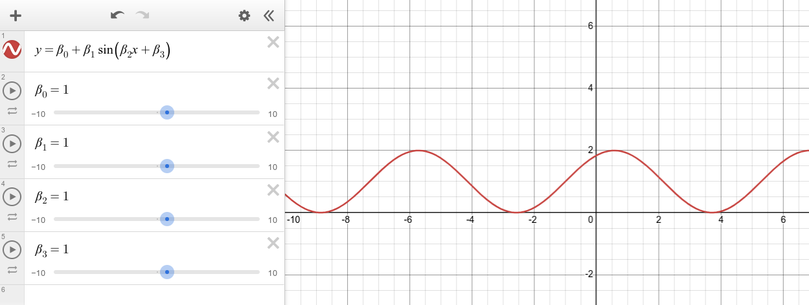

-
For the following data:
| \(x\) |
3.0 |
5.0 |
6.0 |
8.0 |
9.0 |
| \(y\) |
5.0 |
5.8 |
5.5 |
6.0 |
7.6 |
we are using the model:
\[ \hat{y} = 3 + \frac{x}{2} \]
- What does the model predict for \(x=7\)?
- For each input \(x_i\), calculate the prediction \(\hat{y}_{i}\).
- For each prediction \(\hat{y}_{i}\), calculate the residual error \(e_i = y_i - \hat{y}_i\).
- Calculate the sum of squared errors.
- Calculate the mean squared error.
- Find the parameters of a linear model \[\hat{y} = \hat{\beta}_{0} + \hat{\beta}_{1}x\] that fits the data with a smaller MSE than the model above.
- Redo steps a through e using a spreadsheet with formulas. Parameters \(\hat{\beta}_0\) and \(\hat{\beta}_1\) should be in cells that are referenced in the formulas so that you can change those values and see the effects propogate through every calculation.
-
Given:
| \(x\) |
4 |
5 |
6 |
| \(y\) |
\(y_1\) |
\(y_2\) |
\(y_3\) |
- Find values of \(y\) to complete the data set such that the model \(\hat{y} = 10 + \frac{x}{2} \) has \(SSE=2\).
- Find the \(MSE\) using your data points.
-
Here is a a dataset of water depths: Depths
-
Copy and paste the data into Desmos to create a scatter plot. This should create a table.
-
We are going to adjust, by hand, the parameters of a sinusoidal model (do not do an automated regression):
\[ \hat{y} = \hat{\beta}_0 + \hat{\beta}_1 \sin( \hat{\beta}_2 t + \hat{\beta}_3 ) \]
Add this model to Desmos as shown (you can type "beta" to create a \(\beta\)).

-
Add the sliders and adjust them until your model appears to fit the data. Record your best hand-fit parameter values.
-
Interpret each of the parameters in the context of the model.
For example, \(\hat{\beta}_{0}\) represents a particular property of the tide which you can describe.
-
Our model has four parameters. Could you still model the tide well enough with only three?
-
Consider a pendulum with mass, length, and initial angle.
- Create an experiment to collect data on how each of these three features affects the period of a pendulum.
- Plot the period as a function of each feature. For each plot, choose an appropriate model and fit that model to your data.
- Decide which feature(s) to combine into a single model, and validate your model by making predictions for unknown values and testing your predictions.